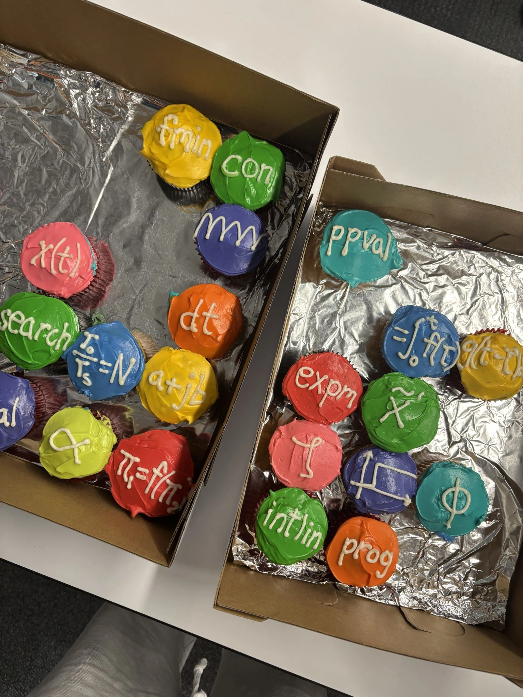

Hi, I’m Kate
A little
about me
I’m an engineering senior at Harvey Mudd, graduating in May 2027. I’m especially interested in applied math, control theory, and dynamics. My projects have taken me from aerospace optimization at NASA Ames to machining gears for a tortilla machine.
I’m also Class President, which means a lot of event planning and conversations with people across Mudd and the other Claremont Colleges. I really enjoy meeting people, and campus life is a big part of my time here.
I grew up in Saigon until I was nine and attended British international schools. I’m currently learning my fifth language. I also love traveling and exploring new places on my own.

MATLAB cupcakes
A few more things
My degree includes an Economics concentration and a Data Science emphasis.
The portrait on this page was taken right after I finished machining my hammer, a Harvey Mudd engineering tradition.